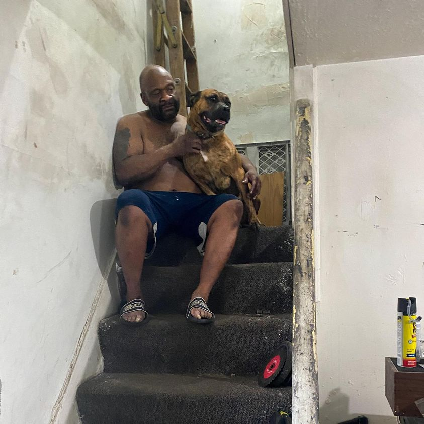

Timeline photos
This is Cadillac and his dog Ranger. He’s a veteran. He always pays his rent on time. He’s so interesting and kind and thoughtful.
On September 1 the city of Akron will condemn our house and he’ll be out.
Because there is no place to go for shelter if you have a pet, my guess is that he’ll ask me for a tent that day and then slip off into the woods where he will be hunted by neighbors and the police. He will likely have all his things taken from him by the city once he becomes “one of those people” who live in a tent.
The weight of my endless failures in this work is particularly heavy this time. I thought I could at least shelter a few people in a house. I was wrong. It isn’t the fact that these people live in a tent or a car or an abandoned house or even a house that is warm and dry and has all the utilities. It’s not about that.
It’s all about them. Society disapproves of them and they are not welcome anywhere. Even if you are a veteran in good standing and you get a check from your military work. You aren’t good enough for us “refined” people in our expensive houses and expensive cars. (The city towed Cadillac’s truck a long time ago.)
I am a failure. And I am filled with rage because we ALL are failures.
Place: Akron, Ohio (41.0732, -81.5179)
Address: Akron, OH 44301